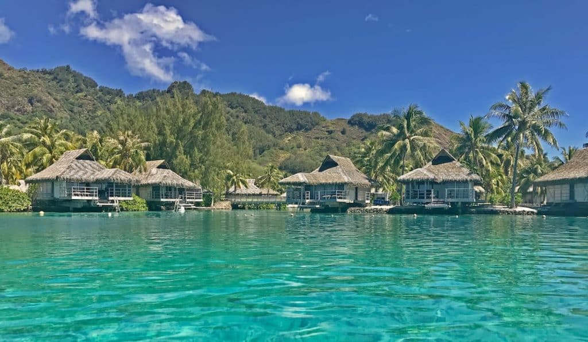

A romântica ilha da Polinésia Francesa, Bora Bora, é destino de muitos casais em lua de mel e não é por menos: atmosfera tranquila e bangalôs construídos sobre o mar clarinho fazem parte da paisagem. O destino também atrai os praticantes de esportes, como windsurf e jet-ski. Outra atividade bem interessante, se tiver coragem, é mergulhar no Lagoonarium. Lembrando que em Bora Bora, há vários animais da fauna local, incluindo tubarões! Mas, calma! Esses passeios são feitos com guias especializados para garantir a segurança dos visitantes.